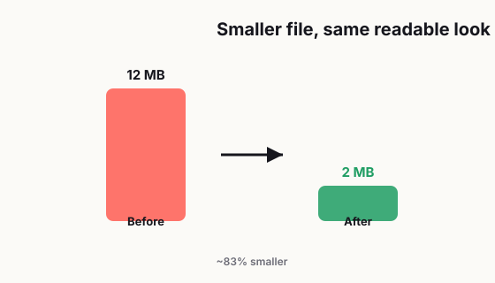

How to Compress a PDF Without Ruining Quality
A large PDF is one of those small problems that somehow manages to waste a shocking amount of time. You try to email the file, and it gets rejected. You upload it to a form, and the page times out. You send it to a client, and they tell you it's too big to open on their phone. So you do what most people do: you compress it fast, cross your fingers, and hope for the best.

Then you open the new version and instantly regret it.
Now the text looks fuzzy. The charts are harder to read. The photos look washed out. And the whole thing feels like it was copied, scanned, and then dragged through three different apps before landing in someone's inbox. Technically, yes, the file is smaller. But it also looks worse, which kind of defeats the point.
Here's the thing: compressing a PDF is not just about making the number smaller. It's about cutting the right things and protecting the parts that actually matter. If you do that well, you can shrink a file a lot without making it look cheap. If you do it badly, you end up with a document that's lighter but far less useful.
This guide walks through why PDF files get so big in the first place, how to tell whether your file is image-heavy or text-heavy, what settings usually work best, when flattening helps, and what quality is actually "good enough" depending on how the file will be used. If you've ever ruined a PDF while trying to make it easier to send, this is for you.
1. Why PDF files get huge in the first place
A lot of people assume a PDF is just "a document," so it should be lightweight by default. That would be nice, but PDFs can hold a lot more than simple text. They can include high-resolution images, embedded fonts, design layers, transparency effects, scanned pages, interactive form elements, and even metadata you didn't realize was there.
In other words, a PDF can quietly carry a whole backpack of extra stuff.
The biggest reason files balloon in size is usually images. If your PDF includes full-page photos, scanned documents, posters, brochures, presentations, or screenshots pasted in at original resolution, the file can grow very quickly. One image might not seem like a big deal, but ten or twenty high-resolution images can turn a normal document into a monster attachment.
Another common issue is scanning. A lot of scanned PDFs are much larger than they need to be because they were created at unnecessarily high resolution. This happens all the time in offices, schools, and home setups. People scan a document at a quality level that makes sense for archival preservation or professional print work, even though they only need to email it to one person for review.
Fonts can also add size, especially when multiple font families are embedded. The same goes for exported design files. PDFs created from tools like InDesign, Illustrator, Canva, PowerPoint, or other visual design platforms may include layers, effects, and export settings that are great for editing or printing but overkill for everyday sharing.
And then there's the classic hidden problem: people convert the same file multiple times. A document might start in Word, get exported to PDF, then printed to PDF again, then re-saved through another tool, then compressed through a random online service. Every step can add weird artifacts, reduce quality, or make the file structure less efficient.
So if your PDF is huge, it usually isn't random. Something inside the file is doing the heavy lifting.
2. Image-heavy PDFs and text-heavy PDFs are not the same problem
This is where a lot of people go wrong. They treat every PDF the same way, even though the right compression strategy depends heavily on what the file actually contains.
If your PDF is mostly text, simple graphics, tables, and vector elements, it usually compresses well without noticeable damage. Text-based documents tend to be much more forgiving because the main content is not built from giant image data. In many cases, the file can be reduced with little or no visible drop in quality.
If your PDF is image-heavy, it's a completely different story.
Image-heavy PDFs include scanned contracts, brochures, portfolios, reports with many screenshots, slide decks exported as pages, restaurant menus, lookbooks, handouts with diagrams, and photo-rich documents. In those files, most of the size lives inside the images. That means compression often comes down to three tradeoffs: image resolution, image format, and image quality level.
The good news is that not every image needs to stay at full quality. The bad news is that some do.
For example, if the PDF contains a lot of text inside screenshots, aggressive image compression can make that text hard to read. If it contains product photos or branding materials, too much compression can make the visuals look cheap. But if it's just a review copy, internal draft, or reference document, you can usually reduce size more aggressively without causing real harm.
A simple rule helps here: if the value of the document depends on visual detail, compress carefully. If the value depends mostly on readability and fast delivery, you have more room to shrink it.
That one distinction can save you from a lot of bad decisions.
3. How to reduce size without destroying readability
Let's be honest, this is the part people actually care about. Nobody wants a lecture on file structure. They want the PDF to send properly and still look normal.
The safest way to compress a PDF is to start by asking one practical question: what is this file for?
If the file is meant for quick email review, mobile viewing, or casual sharing, you usually do not need print-level image quality. If the file is meant for professional print, archival storage, legal documentation, or client-facing presentation, you need to be more careful.
A good middle-ground workflow looks like this:
First, keep the original file. Always. Never compress the only copy and then hope you can undo the damage later. Save a clean original and work from a duplicate.
Second, reduce image resolution only as much as needed. A lot of PDFs stay huge because the images were exported at much higher resolution than necessary for screen use. For screen reading, extremely high resolution is often wasted. You want images to look clear at normal zoom, not oversized for a billboard.
Third, avoid repeated recompression. Every time you run a file through another export or compression layer, you risk stacking quality loss. One careful pass is usually better than three rushed ones.
Fourth, check the result on both desktop and mobile. A PDF may look acceptable on a large screen but unreadable on a phone, especially if fine text lives inside screenshots or scanned pages. A quick test on more than one device can reveal problems before your readers do.
Fifth, review the worst pages, not just the first page. People love compressing a 40-page file, glancing at page one, and declaring victory. Then page 17 turns out to be a blurry chart and page 29 has text that looks soft. Spot-checking the most image-heavy pages is much smarter than trusting a quick preview.
If you want a simple priority list, protect these first:
- Body text.
- Numbers in tables.
- Labels in charts and diagrams.
- Signatures, stamps, or official marks.
- Logos and photos that affect credibility.
If those still look good, you're probably in a safe zone.
4. When flattening images helps, and when it absolutely doesn't
Flattening can be useful, but it's one of those features people use without fully understanding what it does.
In simple terms, flattening combines certain visual elements into a more fixed output. It can reduce complexity in some files, especially when there are layers, transparency effects, annotations, or design elements that don't need to stay editable. That can help with compatibility and sometimes reduce file size.
It can also make a mess.
If you flatten too early, you may lose flexibility you still need. Editable fields, selectable text, layered graphics, and interactive elements can become harder to modify or reuse. In some cases, flattening can turn cleaner vector content into image-like output, which may actually hurt clarity if the next step includes more compression.
So when does flattening make sense?
It helps when the file is final, mostly visual, and not meant for more editing. It also helps when weird rendering issues are coming from layers or transparency. If the PDF is glitchy, slow, or inconsistent across viewers, flattening can sometimes simplify it enough to behave better.
When should you avoid it?
Avoid flattening if you still need to edit the document, preserve searchable text, maintain form functionality, or keep sharp vector elements intact. Flattening a form before the workflow is finished can create needless headaches. Flattening text-heavy or diagram-heavy content can also be the wrong move if it reduces crispness.
The easiest way to think about it is this: flattening is a final-output decision, not a casual cleanup button.
5. What quality is good enough for email, print, and archive
A lot of PDF frustration comes from chasing the wrong standard.
People try to preserve perfect quality for files that only need to survive an email attachment. Or they compress a file hard because it's "just a PDF," even though it's supposed to be printed, reviewed by a client, or kept for records. The right quality level depends on the job.
For email and everyday sharing, "good enough" means clear text, readable diagrams, and decent-looking images at normal screen size. That's it. The file doesn't need to look magazine-perfect. It needs to open quickly, upload easily, and stay readable on common devices.
For professional print, the bar is higher. Small type, image detail, line sharpness, and color quality matter more. You can still optimize the file, but this is not the place to be aggressive. Saving a few megabytes is not worth making printed materials look soft or unprofessional.
For archive use, priorities change again. You may care less about tiny file size and more about long-term readability, clean scans, consistent formatting, and accurate recordkeeping. A file that is too compressed may be annoying years later when someone needs to zoom in, extract details, or run text recognition.
This is why one-size-fits-all compression advice is so unreliable. The "best" setting is not universal. The right result is the one that matches the real purpose of the file.
A useful habit is to create different versions when needed:
- A share version for email or upload.
- A print version for high-quality output.
- An archive version for long-term storage.
Yes, it takes a little more effort. But it's still much less annoying than sending the wrong version and fixing the fallout later.
6. Common mistakes that make a PDF worse, not better
Most bad PDF outcomes come from a few repeat mistakes.
The first is compressing before understanding what's inside the file. If you don't know whether size is coming from photos, scans, fonts, or exported design elements, you're basically guessing. Guessing is how perfectly readable documents turn into fuzzy disasters.
The second mistake is overcompressing scanned text. Scans already have a tougher job because the "text" may actually be image data. Once you compress that too aggressively, letters lose edge definition and readability drops fast. It doesn't take much.
The third mistake is trusting tiny previews. A file can look fine in a thumbnail or browser preview and still be awful when someone zooms in. Always inspect it at realistic viewing sizes.
The fourth is using random tools with unknown settings. Some compression tools are fine. Some are way too aggressive by default. Some strip out useful elements, and some make the file smaller in exchange for obviously worse output. Smaller is not automatically better.
The fifth is compressing a file that was badly made in the first place. If the original PDF is bloated because of oversized images, poor export choices, or repeated conversions, the smarter move may be rebuilding or re-exporting the file cleanly instead of trying to rescue it at the end.
And finally, a lot of people forget the human part of the problem. The point of compression is not to "win" against file size. The point is to make the document easier for another person to receive, open, read, and trust. If the final file looks broken, cheap, or suspiciously degraded, you solved one problem by creating another.
7. A simple practical workflow that works for most people
If you just want a realistic method, here's a solid approach.
Start with the original and duplicate it. Then ask what the file is for: email, print, archive, or internal use. Identify whether the document is text-heavy or image-heavy. Compress once, not five times. Check body text, charts, and pages with the most visual detail. Open it on both desktop and phone. If something important looks soft, back off slightly and try a lighter setting.
That's the whole mindset.
You do not need to chase perfect technical purity. You just need a version that looks clean, reads easily, and behaves well in the real world. Most people are not judging your PDF like an art director. They just don't want the file to bounce back, take forever to load, or look like it survived a fax machine from 2003.
A good PDF should feel boring in the best way. It should open, look normal, and do its job without drama.
And honestly, that's the real win.
Frequently asked
Why is my PDF file so large?
PDF files usually become large because they contain high-resolution images, scanned pages, embedded fonts, design layers, or repeated exports from different tools. In most cases, images are the biggest reason.
Can I compress a PDF without losing quality?
You can usually reduce a PDF's size without noticeable quality loss if you compress it carefully and match the settings to the file's purpose. Text-heavy PDFs are easier to shrink than image-heavy PDFs.
What is the difference between image-heavy and text-heavy PDFs?
Text-heavy PDFs mostly contain selectable text, tables, and vector graphics, so they often compress well. Image-heavy PDFs rely on photos, scans, or screenshots, which means aggressive compression can make them blurry or hard to read.
When should I flatten a PDF?
Flattening can help when a PDF is final and no longer needs editing, especially if it contains layers, annotations, or transparency effects. You should avoid flattening if you still need editable text, forms, or searchable content.
What PDF quality is good enough for email?
For email, good enough usually means the file opens quickly, text stays sharp, and charts or images remain easy to read on both desktop and mobile. It does not need to be print-perfect.
What is the biggest mistake people make when compressing PDFs?
The biggest mistake is overcompressing without checking the result. Many people make the file smaller but damage text clarity, chart labels, or scanned pages so badly that the document becomes less useful.